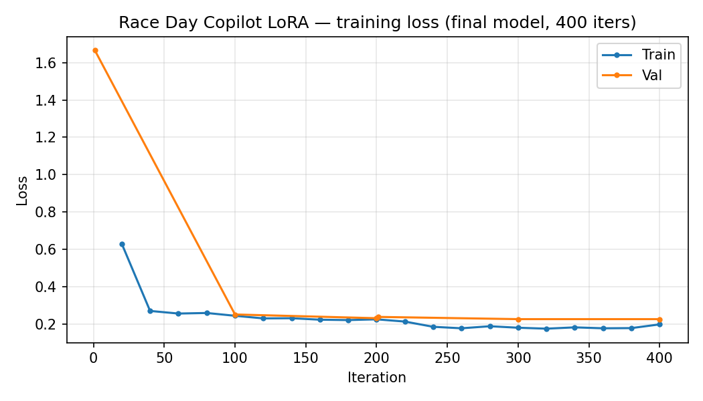

Guardrails and distillation, benchmarked
Photograph a race course map and state a goal. Local OCR and Claude turn the
photo into a course profile, retrieval adds pacing research from 14
knowledge cards, and Claude writes a km-by-km plan. verifier.py
then checks the plan for coverage, split arithmetic, hill plausibility,
fade, heat and citations, and any failure goes back to the model as a
plain-English sentence. I also distilled the task into a 4-bit Qwen2.5-3B
with LoRA, trained on a laptop from 1,321 verifier-passed teacher plans. On
70 held-out scenarios the student formats almost every plan correctly and
then gets the arithmetic wrong.
of the Claude teacher's zero-shot plans pass every check on the 70 held-out scenarios.
Parse success for Qwen2.5-3B before and after LoRA fine-tuning.
Full verifier pass rate for the LoRA student: 82.9% of its plans miss the 90-second sum tolerance.
of teacher generations accepted while building the training set: 1,458 of 1,519 attempts.
The pipeline
src/vision.py runs Tesseract OCR on the photo, then claude -p parses the text into a CourseProfile: distance, hill segments with trend and severity, and a confidence. A photo that isn't a course map gets a refusal.ContextBudgeter fits the course, the runner brief and the retrieved cards into a token budget and reports each section's share. Teacher and student get the same assembled prompt.PacingPlan: per-km target paces, predicted finish, fade allowance, heat adjustment, cautions, citations.verify() returns a list of violation sentences. An empty list passes. Otherwise the sentences go into the next prompt, up to two retries.The verifier
fade_allowance_pct must match its own splits within 0.5 points.Earlier descriptions of this project counted five checks. The citation rule lives in the same function and is scored in the benchmark, so it is listed here as the sixth.
The benchmark
All three systems ran zero-shot, with no retries and identical prompts, on
70 held-out scenarios split by scenario id (seed 42, 90/5/5). The numbers
come from eval/benchmark.md.
| System | Parse success | Verifier pass | Latency, s/plan |
|---|---|---|---|
| Qwen2.5-3B base | 55.7% | 0.0% | 17.5 |
| Qwen2.5-3B + LoRA | 95.7% | 0.0% | 53.7 |
| Claude teacher | 90.0% | 75.7% | 157.7 |
The pass rate alone hides where the student fails. Share of plans failing each check:
| Check | Base | LoRA | Teacher |
|---|---|---|---|
| Parse | 44.3% | 4.3% | 10.0% |
| Coverage | 55.7% | 2.9% | 0.0% |
| Sum | 0.0% | 82.9% | 2.9% |
| Plausibility | 0.0% | 1.4% | 0.0% |
| Fade | 0.0% | 91.4% | 5.7% |
| Heat | 0.0% | 4.3% | 0.0% |
| Citations | 0.0% | 0.0% | 8.6% |
Base plans fail at parse or coverage, so the verifier returns early and the later checks never run on them; their 0.0% there means "not reached".
The LoRA student is close to the teacher on structure, coverage, hill
plausibility, heat and citations; where it falls down is the two checks that
need exact arithmetic across 42 numbers. A typical student plan misses the goal by 430
to 730 seconds, and its fade_allowance_pct often disagrees with
its own splits in sign, for example reporting 4.5 while the splits compute
−5.1%. In a blind, position-swapped LLM-judge comparison on 60 pairs,
the teacher was preferred 93.3% of the time, the student never, with 6.7% ties.
The fine-tune
Training data: 1,458 accepted scenarios across 6 course profiles, 14 goal
times, 6 temperatures and 3 experience levels, split into 1,321 train, 67
validation and 70 test, with a leakage check. Training used
mlx_lm LoRA on mlx-community/Qwen2.5-3B-Instruct-4bit,
16 layers, batch size 1, gradient accumulation 4, learning rate 5e-5,
gradient checkpointing.
train_clipped.py reuses mlx_lm.lora's loop and adds clip_grad_norm, since the CLI has no clipping flag. It diverged again; gradient norms stayed at 0.18 to 0.35, under the 1.0 threshold, so clipping never engaged.
eval/loss_curve_divergence_incident.png and training/*.log.Limitations
The student model is not usable on its own yet: no held-out plan passed every check. It would need either a decaying learning-rate schedule and more training, or the arithmetic moved out of the model, for example by having it emit relative effort and computing the splits in code.
The 70 test scenarios come from the same six synthetic course profiles as
the training data, so the benchmark doesn't test unseen course shapes or
photographed maps. The LLM judge is Claude, which is also the teacher. And the
archived raw outputs in eval/raw_outputs_*.json were truncated at
4,000 characters when saved; scoring ran on the full text before truncation,
so the metrics stand, but the archive is incomplete.
Plans are pacing guidance for adult runners, not medical advice. The app runs on your own machine; there is no hosted demo.
Stack
claude -p for structured parsing; no vision API keymlx_lm) on Apple silicon, custom clipped training loopverifier.py, bounded retry loop with violation feedbacktests/test_verifier.py